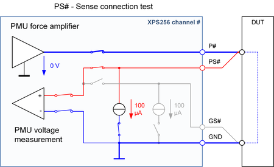
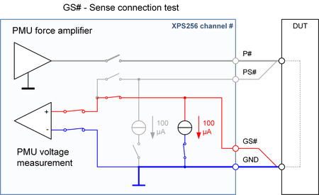

XPS256 Kelvin test unit
The XPS256 card features a Kelvin test unit that is also known as sense-connection test unit. Kelvin test means that the connection from the force lines to the sense lines on the DUT board or at the DUT pins is verified. The Kelvin test unit is available per channel for the force line (P#) and for the return line (common GND).
The Kelvin test unit applies a small test current to the tested force to sense (FS) connection and measures the voltage difference between the two lines. The resistance is calculated from the measured voltage difference and the test current, serves as criterion for the pass/fail decision and should be near 0.0 Ω for a good FS connection.
- The Kelvin test unit is available per channel.
- The default value of the programmable threshold for the pass/fail decision is about 5 kΩ.
- The test current is about 100 µA per channel.
- The maximum capacitance between the force lines and the corresponding sense lines is 5 nF.
- Two measurements are serially performed for the PS# pin and the GS# pin.
- The test can be performed only in the disconnected state of the selected pins.
The purpose of the Kelvin test unit is to ensure that when the DUT is contacted, the high-impedance sense line is connected to the force line at the DUT with a sufficiently low contact resistance. Due to the high input impedance of the sense lines, the fixed threshold of some kilo-Ohms will be sufficiently low.
The Kelvin test unit is the only resource that can perform a reliable sense connection test with a defined test current applied.
Since connections and hardware on the DUT board can sabotage the test of the sense connections, we recommend that you check the functionality of the test without DUT and with open sense connections. All tested sense connections must fail in this verification.
The purpose of the Kelvin test unit is not to check the low impedance force connections. The force connections are to be checked by the XPS256 voltage drop measurement in combination with a high test current forced by the PMU. This force connection test requires that the contact resistance of the sense lines already has been verified.
Attention: An inadequate sense line connection does not necessarily mean that a test fails. The input bias current of the line may falsify the measurement and mask another fatal error like a high voltage drop on the force line.
Operating principle
The test is divided into two sub-tests for the P# and PS# pin and for the GS# pin. The measurements are performed serially on the pins.
- High sense test
-
The test current is applied to the high sense pin (PS#). The force output (P#) is set to 0 V. The voltage drop from the high sense pin via the FS connection at the DUT to the force output pin is measured and judged. Since this test has to check only the sense connection, the test current can also flow through a possibly available low-impedance connection of the DUT.

- Ground sense test
-
The test current is forced at the ground sense pin (GS#). The voltage drop from the ground sense pin via the FS connection at the DUT to ground is measured and judged.

Functional changes
- Introduced in SmarTest 7.10.1